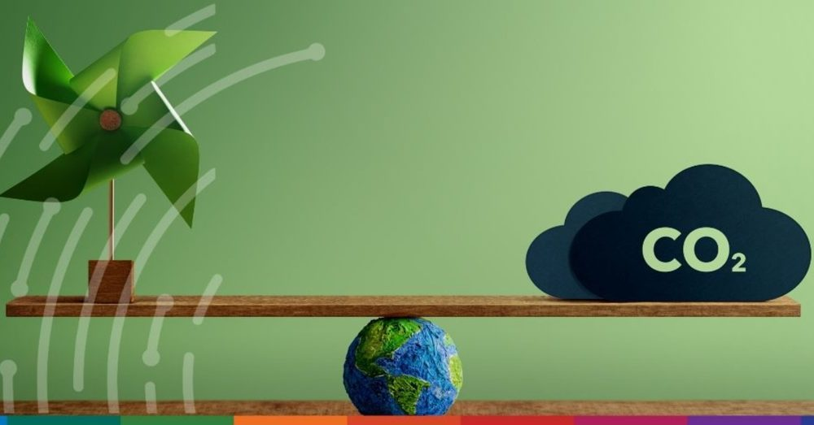
Essay · draft
Why carbon software keeps failing the audit
Placeholder — a point of view on trust vs. dashboards.
👋 Hi, I'm Romaa
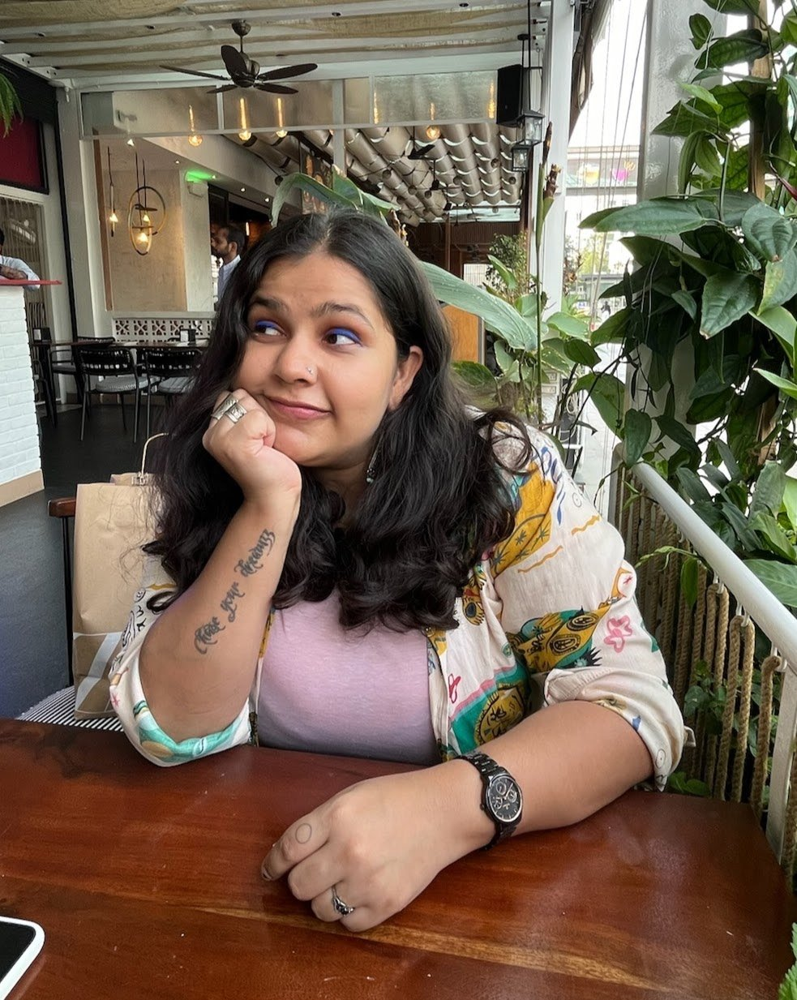
A career zig-zagger and eternal learner, now shaping the future of GHG measurement and ESG compliance.
Observer · Analyser · Builder · Dreamer
About
I've always wanted more — more soul, more substance, more colour in whatever I make.
That restlessness is how I ended up where I am. I kept chasing work with more depth and more meaning behind it, and it led me from writing to marketing to product — and, eventually, to Climes, building tools for something that actually matters.
I'm a curious cat with eclectic taste in just about everything. I like things vibrant, bold, and alive — and I bring that same energy to how I approach my work. I don't like doing the same thing over and over. I'm happiest solving a new problem, finding a different way to do something, or turning a thing around to see it from an angle no one's looked at yet.
Put simply: I care about the how and the why as much as the what — and I want the output to have a pulse.
Selected Work
Two products I've shaped end to end — one for how businesses measure and comply on carbon, one for how students revise.
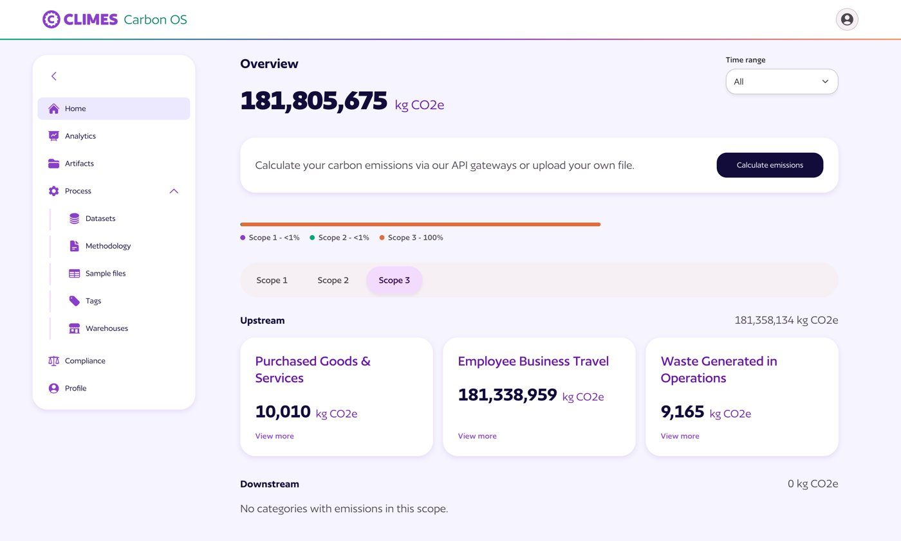
An enterprise carbon platform I've built across GHG methodologies, SBTi target-setting workflows, carbon analytics — and a lot more still to come. Where measurement meets compliance, made usable.
A study companion I built for my own MA Psychology exams — flashcards, timelines, concept maps, cheat sheets, and analysis of 15 years of past papers. It ended up helping 200+ students revise during the exam season.
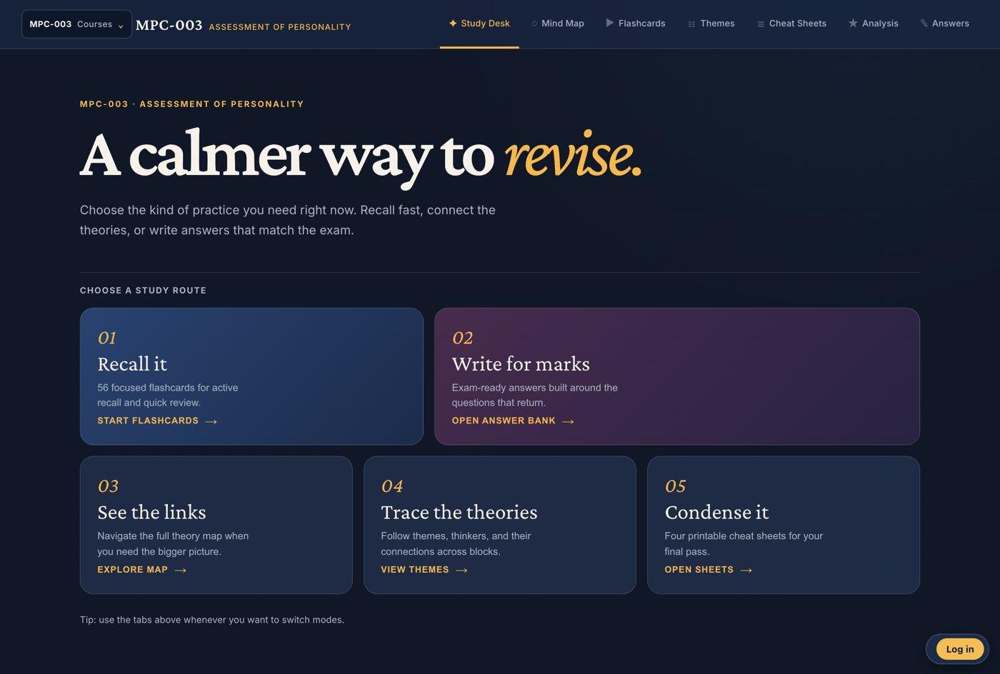
Career
Ten years, one direction of travel: from words, to markets, to products.
Bridging business strategy and technical execution for the carbon accounting platform.
Led marketing for India's leading climate-finance company (backed by Peak XV / Sequoia) — channelling finance into building and regenerating carbon sinks across the Global South, with 80k+ farmers onboarded and 250k+ acres under management. The bridge that carried me into product.
Digital strategy across brand and performance for B2B clients.
Product marketing and go-to-market for a B2B SaaS product.
Eight years learning the craft from the inside — writing, editing, content and product marketing across SaaS, including managing content teams, product releases, and go-to-market in fast, agile environments.
Studies
An unusual education for a PM: an executive MBA in strategy, a postgraduate grounding in business analytics, sustainability reporting — and a master's in psychology, because I wanted to understand people properly.
The strategy backbone — how businesses decide, allocate, and lead.
The data half of product judgment — evidence over instinct.
Curiosity about why people do what they do — quietly my most useful product lens.
The regulatory backbone of climate work — why the numbers have to hold.
The Garden
A living space for ideas, work-in-progress, and the models I reach for.

Placeholder — a point of view on trust vs. dashboards.
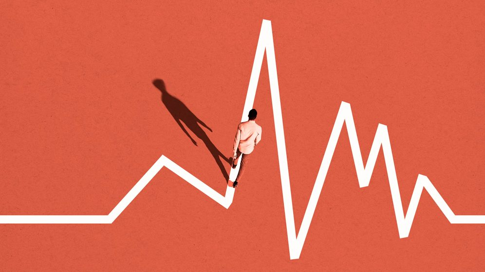
Placeholder — transferable skills, unlearned habits.
Placeholder — what you're figuring out right now.
Placeholder — a build note.
Placeholder — the standards you build against & why.
Placeholder — a model you actually use, in your words.
Beyond Work
The multi-passionate half.
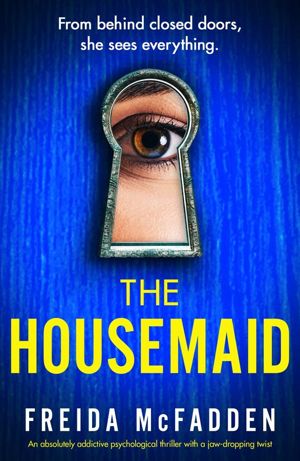
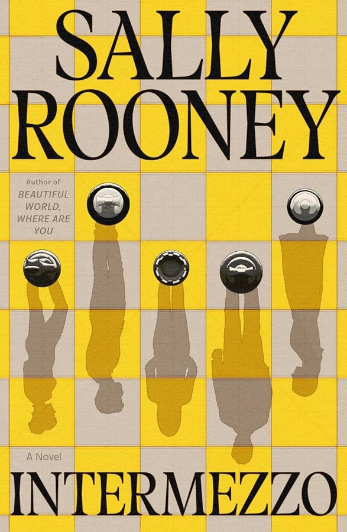
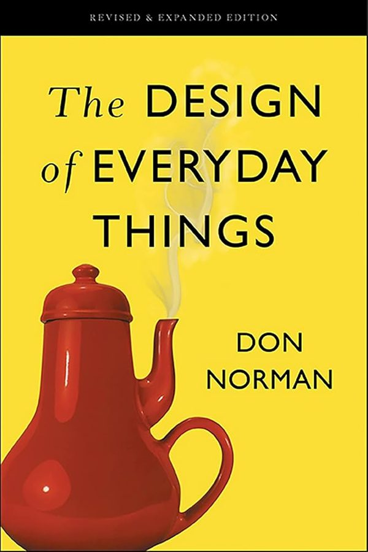
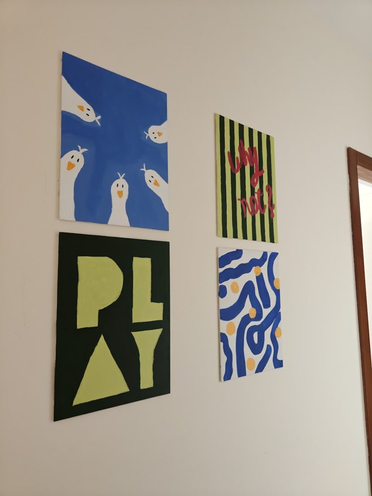
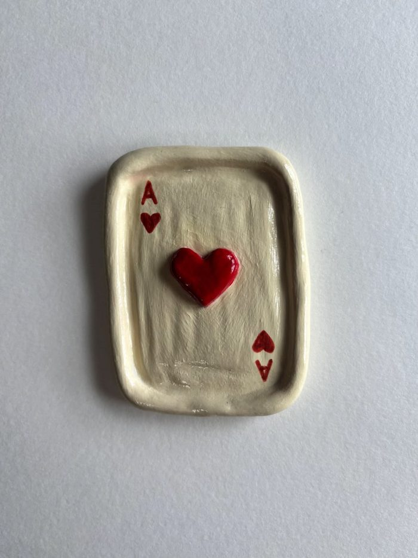
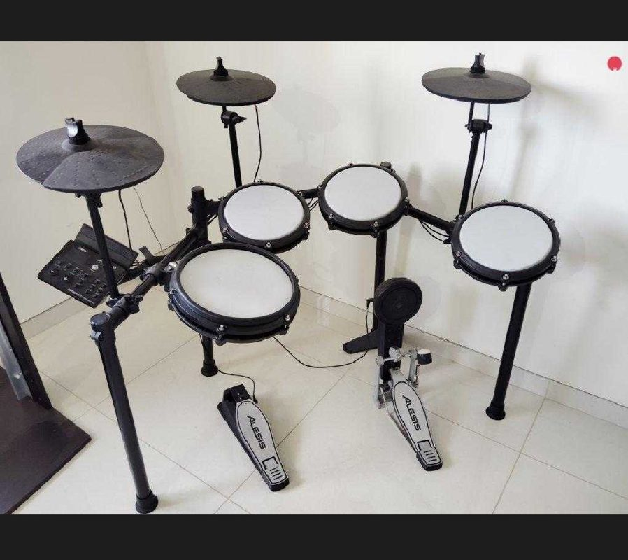
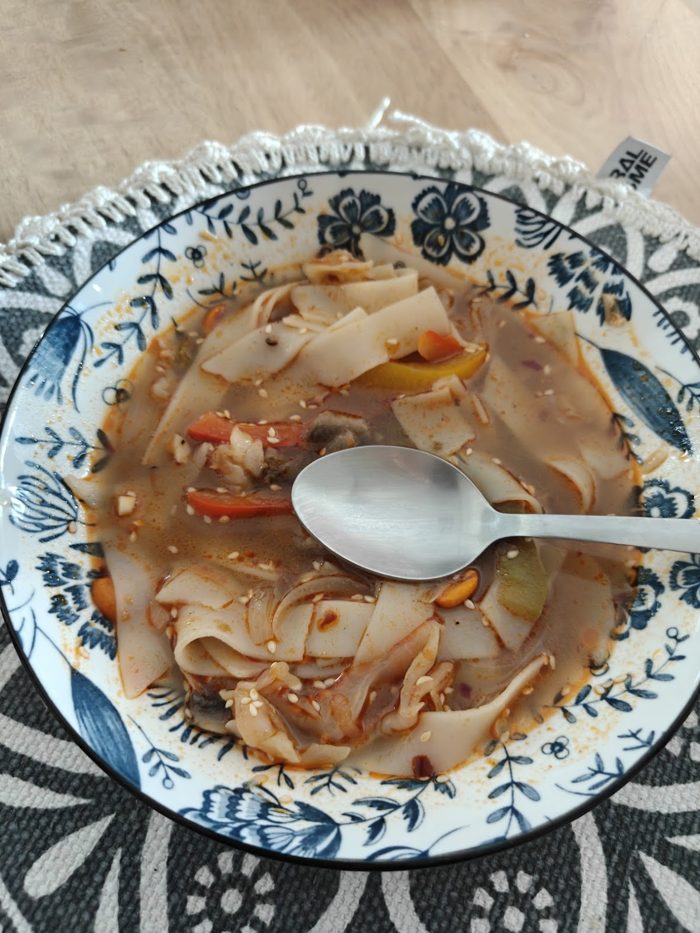
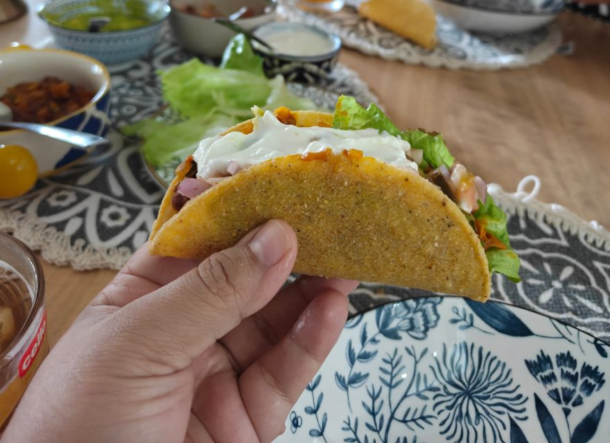
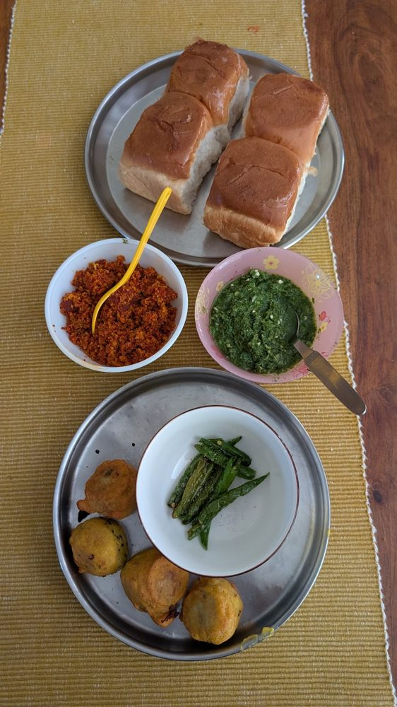